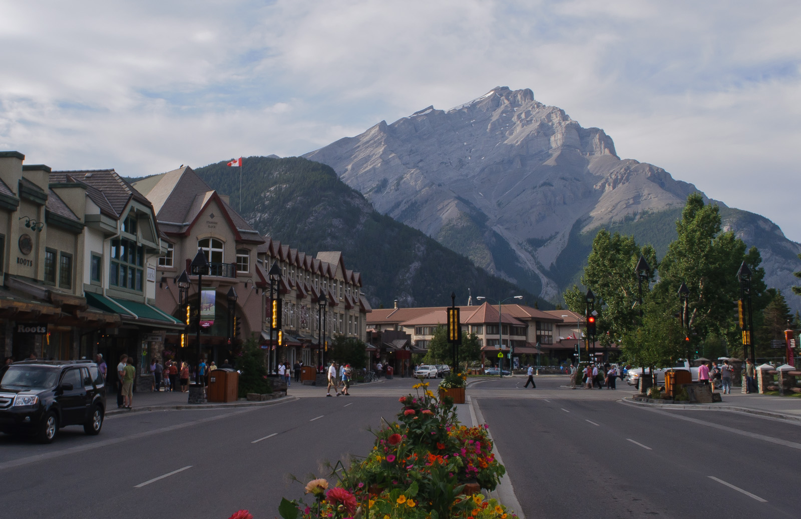

Banff and Lake Louise · 5-day family itinerary
One base in the Town of Banff, one reserved trip to Lake Louise, and Moraine Lake left off the plan unless the family already holds access.

Photo: InSapphoWeTrust, Banff Avenue, Banff, CC BY-SA 2.0, via Wikimedia Commons.
.jpg){kind=link}
Before you commit
This illustrative route keeps four nights in the Town of Banff. The lake day is a reserved transit day, not a spontaneous drive. The items below were not live-checked.
Stay in Banff without a car. Use Roam Route 8X for Lake Louise only. Use Roam Route 9 for Johnston Canyon only while that bus and the trail are both open. Do not add Moraine Lake to the lake day.
One anchor each day, with the first and last days kept local. The lakeshore walk is 2.3 km one way, about 1 hour, with 175 m of elevation gain.
Shuttle seats, 8X reservations, park admission, canyon access and trail conditions were not live-checked for a chosen date. A booking-hub link is intent only.
Planning boundary: dates are illustrative. The 2026 shuttle window and the Johnston Canyon closure below come from pages opened on 2 October 2026. Recheck them before booking. Alfred does not look up a live Roam seat or a Parks Canada shuttle while it writes the day. The booking hub opens a partner checkout. It does not prove that a park reservation exists.
Route and family-coordination brief
Party: two adults and school-age children. Base: four nights in the Town of Banff, not a second hotel at Lake Louise. Pace: moderate, one anchor a day. Budget input: Mid Range. Fares stated on this page are Roam’s published 2026 Route 8X and Route 9 single rides, plus the Parks Canada reservation fees named on the lake day. Park admission and the shuttle fare table were not opened.
Parks Canada’s Banff visit page and the Cave and Basin directions page do not agree on the airport distance. Neither number is used here, and neither page gives a drive time. The arrival morning and the departure morning stay free of lake or canyon plans because of that gap.
The five days do not keep a car. Airport transfers bookend the trip. Town days are on foot. Lake Louise is reserved Roam Route 8X. Johnston Canyon is Roam Route 9 only while that bus and the trail are both open. Personal vehicles are not allowed on Moraine Lake Road. A walk-up seat on Route 8X does not include Moraine Lake. The default plan therefore visits Lake Louise Lakeshore and stops there.
Day 1 — Arrive in Banff and stay in town
After the airport transfer, check in around the Town of Banff and keep the rest of the day inside town on foot. If energy remains, walk only as far as the Banff Visitor Centre at 224 Banff Avenue and eat nearby. Do not start for Lake Louise or the canyon, and do not pick up a car for later days.
Fallback: if the transfer arrives late, skip the walk. The Fenland Loop, a 1.9 km circuit of about 40 minutes from a trailhead west of Mount Norquay Road, can move to Day 4 or Day 5. Parks Canada lists that trailhead as a 20 minute, 1.5 km walk northwest of downtown Banff. An October bus to Fenland was not on the pages opened, so this fallback is a walk. It does not claim a bus.
Day 2 — Cave and Basin, then a town reset
Walk from town for Cave and Basin National Historic Site at 311 Cave Avenue. The hiking guide lists that trailhead as a 30 minute, 2 km walk southwest of downtown Banff, and lists Roam Route 4 there as summer only. This plan does not claim an October bus. On the pages opened 2 October 2026, published hours are 9:30 a.m. to 5 p.m. daily from 15 May to 15 October, with a listed closure on 21–24 September 2026. Parks Canada asks visitors to allow at least 2–3 hours for the site, gift shop and boardwalks. That visit is the whole anchor. Return to town for lunch and leave the afternoon open. Regular admission fees apply from 8 September 2026; the fee table was not opened, so no price is stated.
Fallback: if the site is closed or the walk is too much, use the Fenland Loop on foot. An October bus to Fenland was not verified. The Marsh Trail also starts at Cave and Basin, but it is 1.5 km one way, about an hour, and uneven from horse use. It is not the family plan.
Day 3 — Reserved Route 8X to Lake Louise, and stop there
This is the protected transfer, and it is a bus, not a drive. Reserve Roam Route 8X from the Banff High School Transit Hub to Lake Louise Lakeshore and reserve the return. The route page opened 2 October 2026 describes a year-round daily service via Lake Louise Village. Reservations are recommended from May through October. Roam’s fare page, opened the same day, lists the 2026 Banff–Lake Louise Express single ride at $12.50 for an adult (19+), $6.25 for a senior (65+) or a youth, and free for a child 12 and under. On that page, youth is 13–18, and an 18-year-old qualifies only with a high-school ID. Between 1 June and 12 October 2026, Roam says about 40 percent of seats are left unreserved, walk-up waits can reach 2 hours, and a walk-up does not include Moraine Lake.
At the lakeshore, walk the Lake Louise Lakeshore Trail only: 2.3 km one way, about 1 hour, with 175 m of elevation gain. Do not add Lake Agnes or the Plain of Six Glaciers. Eat simply and take the reserved bus back to Banff.
Moraine Lake stays off this day. Moraine Lake Road is closed to personal vehicles year-round. Parks Canada’s page, opened 2 October 2026, says access is only permitted for Parks Canada shuttles, licensed commercial operators with a Moraine Lake Road Licence of Occupation, and registered guests of Moraine Lake Lodge. This plan does not include any of those. Parks Canada’s 2026 Moraine shuttle runs 1 June to 12 October, weather permitting, every 30 minutes from 6:30 a.m. to 5 p.m., with the last return at 7:30 p.m. Check-in for those shuttles is at the Lake Louise Park and Ride, 1 Whitehorn Road, inside the booked hour. There is no cell service at the lake. The same page says the reservation fee is non-refundable, $3.50 online and $5.50 by telephone, and is applied once per reservation. The shuttle ticket does not include the national park entry fee. Both are required. The shuttle fare table was not opened, so no shuttle fare is stated.
Fallback: if the 8X reservation is gone, keep the day in Banff on foot. Do not drive to the Lake Louise Lakeshore and hope for a stall. Parks Canada says attempting that drive is not recommended. The same page says: “Last summer approximately 75% of vehicles attempting to access Upper Lake Louise were turned away once the limited parking spots were full.” The page does not name the year.
Day 4 — Johnston Canyon Lower Falls by Route 9, only if the date is still open
Before 13 October 2026, the day’s anchor is the Lower Falls at Johnston Canyon and nothing farther. Get there on Roam Route 9, not by car. The Route 9 page opened 2 October 2026 describes a direct, non-reservable bus from the Banff High School Transit Hub to Johnston Canyon via Highway 1 and Castle Junction. On the page opened 2 October 2026, the summer schedule was described as running seven days a week, and that the service is suspended from 13 October to approximately 30 November. Roam’s fare page lists a Johnston Canyon single ride at $5 for an adult and $2.50 for a senior or youth, with children 12 and under free. Youth on that page is 13–18, and an 18-year-old qualifies only with a high-school ID.
Parks Canada lists the trailhead at the Johnston Canyon Day-use Area, 25 km northwest of Banff on the Bow Valley Parkway. The Lower Falls are 1.1 km one way, about 1 hour, with 85 m of elevation gain, on a busy uneven paved path where passing is difficult. Strollers are not recommended. The Upper Falls, 2.4 km one way, are not part of the plan.
Beginning 13 October 2026, the same hiking page says the trail from the parking-lot trailhead to both falls, plus the P1 parking lot and washrooms, closes for rock-slope work. On or after that date, do not send the family to that trailhead. Route 9’s page says the bus is suspended from that date as well.
Fallback: if the closure, a suspended Route 9, or a parkway bulletin blocks the canyon, walk the Fenland Loop from town. An October bus to the Fenland trailhead was not verified, so this fallback does not claim a bus. Do not substitute the Ink Pots: that continuation is 5.5 km one way and about four hours. A seasonal vehicle restriction on the Bow Valley Parkway was not opened as its own page, so its dates are not stated here. Do not switch this day to driving.
Day 5 — Leave the morning for the airport transfer
Breakfast in town, pack, and take the transfer toward Calgary International Airport. A short stop near 224 Banff Avenue is allowed only after the flight time is known. There is no lake and no canyon. The opened pages do not agree on the airport distance, and neither gives a drive time, so the morning is the buffer.
Fallback: if the flight is late enough for a walk, use the Fenland Loop on foot and still leave a confirmed gap before the transfer. An October bus to Fenland was not verified. Do not recover a missed lake visit on departure day.
Planning notes
Dates are illustrative. Recheck Route 8X reservations and fares, Route 9 dates, Parks Canada shuttle dates, Moraine Lake Road restrictions, Cave and Basin hours, the Johnston Canyon closure, park admission, weather, accessibility and supplier cancellation terms at decision time. Alfred can hold the party, origin, destination, dates, budget and pace in an editable itinerary once generation reaches ACTIVE. Alfred does not look up a live Roam seat or a Parks Canada shuttle while it writes the day. The booking hub opens a partner checkout. It does not prove that a park reservation exists.
Plan a trip
Start with your people, dates and pace, then review the editable plan before booking.
Plan a trip